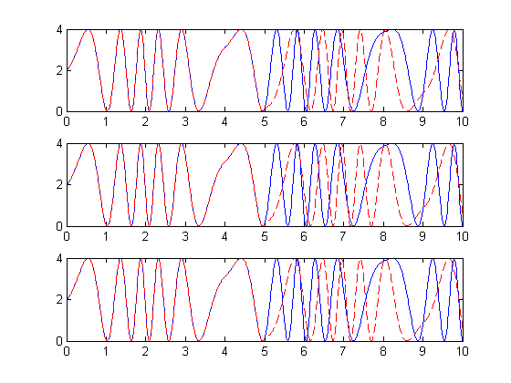
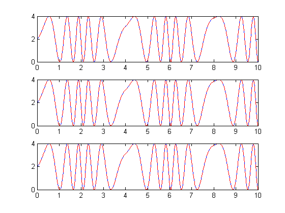

Saving and Restoring Simulation Using SimState
This demo illustrates the capability of saving and restoring a simulation state (SimState) using SimState objects. The SimState object contains the set of all variables that are related to the simulation of a model. By saving the SimState object at the end of a simulation, Simulink® is able to reload the SimState and reproduce the exact same simulation results at the time at which the SimState was saved.
This demo illustrates:
1. Saving the Final states (logged states) is not always sufficient for complete, accurate restoration of the final simulation state.
2. How you can use the SimState feature to save and restore a complete, final simulation state.
Contents
Difficulties with Models with Variable Transport Delay
Models with Transport Delay blocks are usually difficult to restore to their state because, when you save the "Final states", the state of the transport delay is not saved in the structure format or the array format.
We wish to compare the simulation results for two cases:
1. Simulate the model from 0 to 5 seconds and save the "Final states" in the workspace. Then load this first set of final states and simulate from 5 to 10 seconds.
2. Simulate the model from 0 to 10 seconds and force the model to produce an output at 5 seconds. We call the result of this simulation the baseline result since it is a nonstop simulation.
The results of the first simulation matches the first half of the baseline result. If the simulation state had been restored completely, the second simulation results should match the second half of the baseline.
mdl = 'sldemo_VariableTransportDelay';
load_system(mdl);
Simulate and save the final state in structure format.
out = sim(mdl, 'StopTime', '5', 'SaveFinalState', 'on',... 'SaveFormat','Structure'); y1 = out.get('ScopeData');
Load the final state from the last simulation and run.
assignin('base', 'xFinal', out.get('xFinal')); out1 = sim(mdl, 'StartTime', '5', 'StopTime', '10', ... 'SaveFinalState', 'off', ... 'LoadInitialState', 'on', 'InitialState', 'xFinal'); y2 = out1.get('ScopeData');
Run a nonstop simulation to serve as the baseline result.
out2 = sim(mdl, 'OutputOption', 'AdditionalOutputTimes' ,... 'OutputTimes','[0 5 10]', 'LoadInitialState', 'off'); y = out2.get('ScopeData');
Plot the results. The second half of the baseline result does not match the simulation from 5 to 10 seconds whose initial state was restored from the final state saved at 5 seconds.
for i=1:3 subplot(3, 1, i); plot(y.time,y.signals(1).values); hold on plot([y1.time; y2.time],[y1.signals(1).values;y2.signals(1).values], ... 'r--'); end
Saving and Restoring the Complete SimState
Simulink provides the option to save the complete final SimState in Simulink.SimState object. The SimState object contains all of the variables needed to restore the simulation results. By saving the complete SimState, Simulink is able to restore the simulation completely and to produce the baseline simulation results.
Set the parameter for Simulink to save the complete SimState at the end of the simulation.
out3 = sim(mdl, 'StopTime', '5', 'SaveFinalState', 'on', ... 'LoadInitialState', 'off', 'SaveCompleteFinalSimState', 'on'); xFinal = out3.get('xFinal'); y1 = out3.get('ScopeData');
Load the SimState from the last simulation and run for an additional 5 seconds. There is no need to provide the start time; however, the value must remain zero. The actual start time is stored in xFinal and will overwrite zero.
out4 = sim(mdl, 'StopTime', '10', 'SaveFinalState', 'off', ... 'LoadInitialState', 'on', 'InitialState', 'xFinal'); y2 = out4.get('ScopeData');
Plot the results and compare them with the baseline simulation. The simulation state was completely restored and thus the SimState results match the baseline.
clf; for i=1:3 subplot(3, 1, i); plot(y.time,y.signals(1).values); hold on plot([y1.time; y2.time],[y1.signals(1).values;y2.signals(1).values], ... 'r--'); end close_system(mdl, 0);